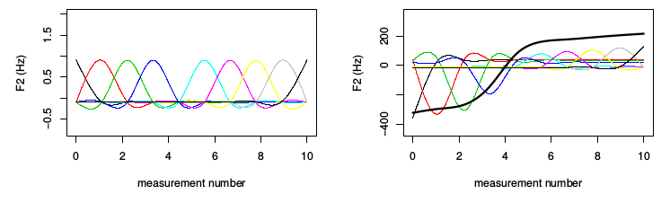
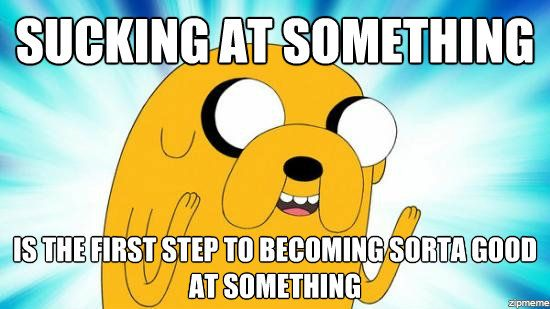

Dale Barr (University of Glasgow)
Mixed-effects workshop, July 20-21, 2022 (Reading)
| data | approach | link | variance | function |
|---|---|---|---|---|
| binary | logistic regression | logit | binomial | glm(), lme4::glmer() |
| count | Poisson regression | log | Poisson | glm(), lme4::glmer() |
| ordinal | ordinal regression | logit | binomial | ordinal::clm(), ordinal::clmm() |
| Bernoulli trial | An event that has a binary outcome, with one outcome typically referred to as 'success' |
| proportion | A ratio of successes to the total number of Bernoulli trials, proportion of days of the week that are Wednesday is 1/7 or about .14 |
| odds | A ratio of successes to non-successes, i.e., odds of a day being Wednesday are 1 to 6, natural odds= 1/6 = .17 |
| log odds | The (natural) log of the odds (turns multiplicative effects into additive effects) |
single-level data, bernoulli trials
mod <- glm(DV ~ IV, family = binomial(link = "logit"), ...)
single-level data, binomial counts
mod <- glm(cbind(Y, K) ~ IV, family = binomial(link = "logit"), ...)
where K = N - Y
lme4::glmer()
(courtesy Márton Sóskuthy)
mgcv::gam()mgcv::bam()You can fit LMMs with GAMM functions.
ML data with within-factor A (A1, A2) and between-factor B (B1, B2)
mgcv::bam(Y ~ A * B +
s(subj_id, bs = "re") +
s(subj_id, A, bs = "re"),
data = dat)
lme4::lmer(Y ~ A * B +
(1 | subj_id) +
(0 + A | subj_id),
data = dat)
mgcv::bam(Y ~ A * B +
## wiggly main effect of tnum
s(tnum, bs = "tp") +
## "factor smooth"
s(subj_id, tnum, bs = "fs") +
s(subj_id, A, bs = "re"),
data = dat)
If you randomized, you are probably OK; the worst you can expect is a mild hit to power.
Thül, Conklin, Barr (2021). Using GAMMs to model trial-by-trial fluctuations in experimental data: More risks but hardly any benefit. Journal of Memory and Language, 120, 104207.
